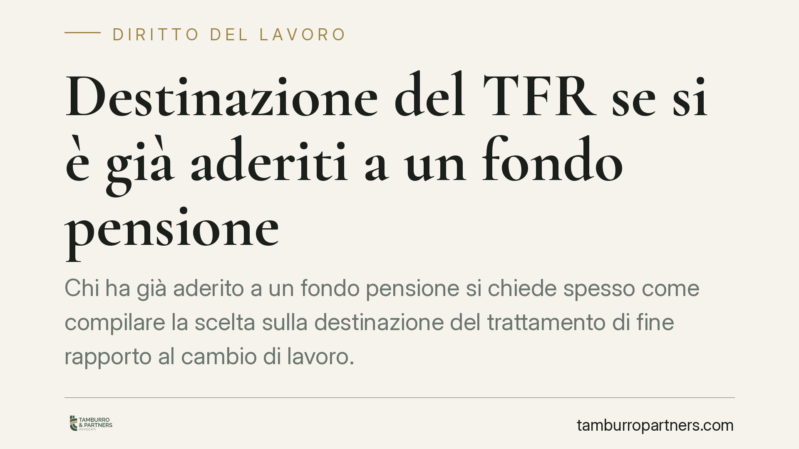

Destinazione del TFR se si è già aderiti a un fondo pensione
Chi ha già aderito a un fondo pensione si chiede spesso come compilare la scelta sulla destinazione del trattamento di fine rapporto al cambio di lavoro. Il quadro vigente ruota attorno al modulo TFR2, al termine di sei mesi dall'assunzione e al meccanismo del conferimento tacito. Capire questi tre elementi evita scelte involontarie e tutela la posizione previdenziale già maturata.

Il contesto
Un chiarimento preliminare. In questo contributo trattiamo il quadro normativo vigente e verificabile sulla destinazione del TFR. Circolano riferimenti a un presunto "modulo TFR3" e a un regime di "adesione automatica" alla previdenza complementare con decorrenza futura: allo stato, non risultano confermati da una fonte normativa primaria o da un atto ministeriale puntualmente citabile. Finché non vi sia un riscontro certo, su questi temi non formuliamo affermazioni giuridiche specifiche.
La domanda concreta resta attuale: chi è già iscritto a un fondo pensione come deve comportarsi, al momento di una nuova assunzione, rispetto al TFR che inizierà a maturare?
Inquadramento normativo
La disciplina di riferimento è il D.lgs. 5 dicembre 2005, n. 252 ("Disciplina delle forme pensionistiche complementari"), in particolare l'art. 8, che regola le modalità di adesione e di conferimento del TFR alle forme di previdenza complementare.
Il lavoratore dipendente, entro sei mesi dall'assunzione, può scegliere se mantenere il TFR maturando presso il datore di lavoro oppure destinarlo a una forma pensionistica complementare. La scelta è espressa, nel regime vigente, attraverso l'apposita modulistica (storicamente il modulo TFR2 per la destinazione, il TFR1 per la richiesta di liquidazione in azienda).
Se entro il termine il lavoratore non manifesta alcuna volontà, opera il conferimento tacito: il TFR maturando confluisce nella forma pensionistica collettiva di riferimento secondo i criteri dell'art. 8. È un meccanismo che produce effetti anche in assenza di una scelta attiva. Per questo il silenzio non è neutro.
Un punto va tenuto fermo: la scelta sulla destinazione riguarda il TFR maturando, cioè quello che si accumulerà da quel momento. Non travolge la posizione previdenziale già costruita presso un fondo a cui si è aderito in precedenza, che resta regolata dalle proprie norme di gestione.
Implicazioni pratiche per chi è già iscritto a un fondo
Essere già aderenti a un fondo pensione non equivale automaticamente ad aver destinato a quel fondo il TFR del nuovo rapporto di lavoro. Sono due piani distinti: l'iscrizione alla forma complementare da un lato, la destinazione del flusso di TFR del rapporto in corso dall'altro.
Al cambio di datore di lavoro, quindi, la scelta sul TFR va riespressa con riferimento al nuovo rapporto. Chi desidera continuare ad alimentare il fondo già attivo deve indicarlo in modo chiaro; chi non si esprime entro i sei mesi si espone al conferimento tacito, che può indirizzare il TFR verso una destinazione diversa da quella desiderata.
L'elemento decisivo è la chiarezza della volontà. Un'imprecisione meramente formale nella compilazione pesa meno di una dichiarazione ambigua sulla sostanza della scelta. Per questo conviene curare soprattutto l'identificazione corretta del fondo e la coerenza complessiva dell'indicazione.
Cosa fare in concreto
- Verifica la tua posizione attuale. Controlla a quale fondo sei già iscritto e recupera i dati identificativi (denominazione e codice del fondo), che ti serviranno per una destinazione corretta.
- Esprimi la scelta entro il termine. Rispetta i sei mesi dall'assunzione: oltre quella soglia può operare il conferimento tacito, con effetti che potrebbero non coincidere con le tue intenzioni.
- Rendi inequivoca la volontà. Compila il modulo indicando con precisione il fondo di destinazione; evita formulazioni generiche o contraddittorie che possano generare dubbi interpretativi.
- Conserva copia e ricevuta. Trattieni una copia firmata del modulo consegnato e la ricevuta di presentazione al datore di lavoro: è la prova della scelta e della sua data.
- In caso di dubbio, verifica la modulistica aggiornata. Richiedi al datore di lavoro o al fondo la modulistica corrente e accertati che sia quella effettivamente in uso, prima della consegna.
Su eventuali novità normative annunciate per il futuro, è opportuno attendere la pubblicazione dei testi ufficiali prima di modificare le proprie scelte, evitando decisioni basate su ricostruzioni non ancora consolidate.
Disclaimer
Contributo informativo a cura di Tamburro & Partners - Avv. Giuseppe Tamburro. Non costituisce parere legale.
Ogni storia di lavoro ha i suoi tempi.
Se gestisci HR e vuoi un confronto su contenzioso, ispezioni o licenziamenti, scrivi allo studio. Ti rispondiamo entro un giorno lavorativo.